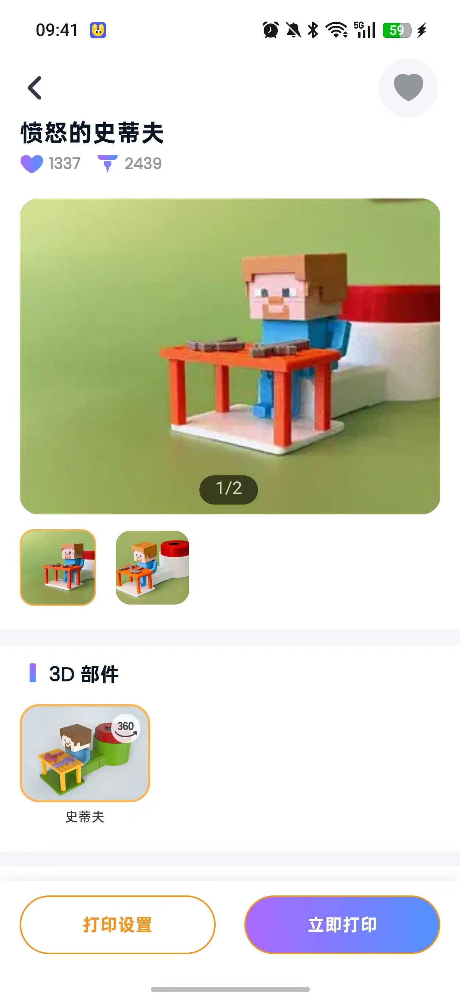
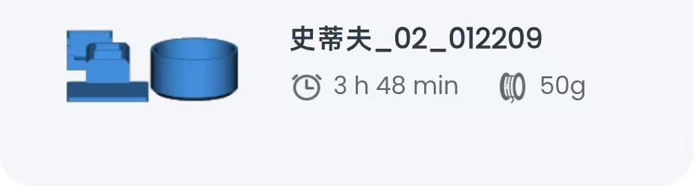
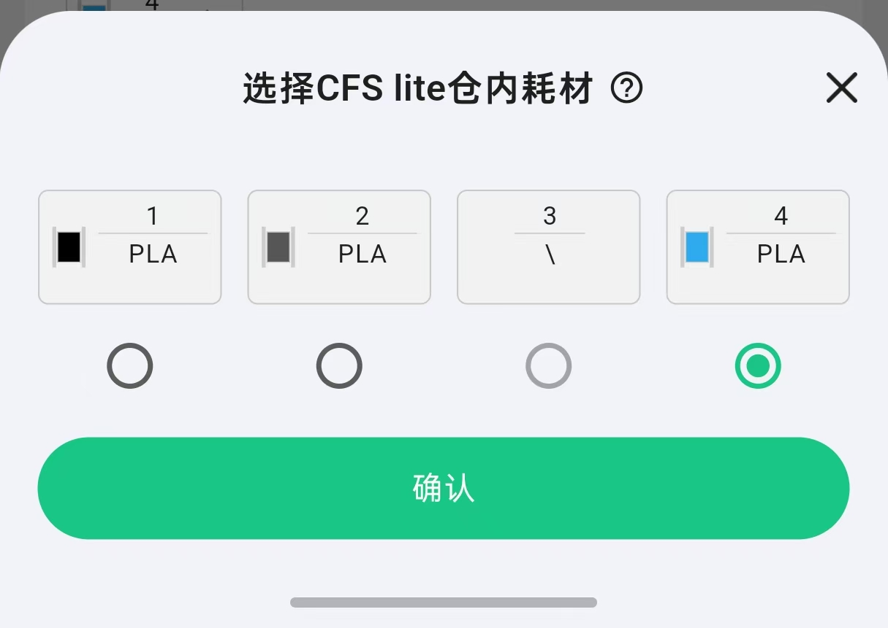

Settings
Create it
‹
Choose your builder
♧
打印机正在打印
1
2

3
Choose your color
Preview
Choose a material source
Food Box
Food Tray
pick your color
4
·
PLA · 蓝色
›
Start Creating

pick your color
正在上传打印任务
0%
· 请保持应用开启